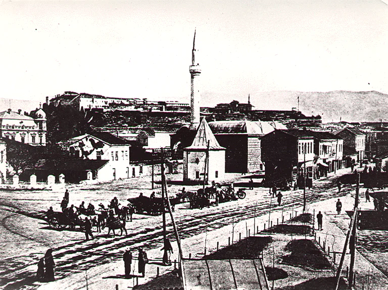
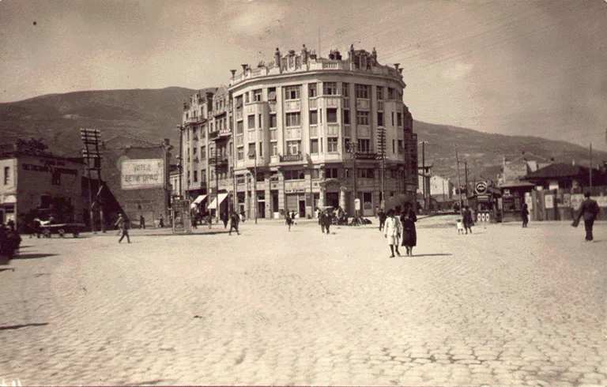
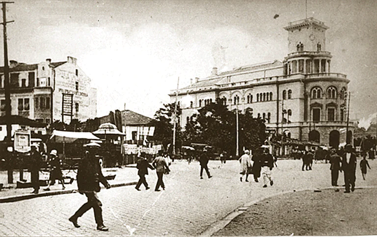

Festë - sheshi
- Skenari
- Aco Petrovski dhe Aki Pavlovski
- Regjia
- Trajče Popov
- Operatori
- Kiro Bilbilovski dhe Trajče Popov
- Viti
- 1949
- Kohëzgjatja
- 00:19

Sheshi i qytetit të Shkupit, fotografuar rreth mesit të shekullit XIX.

Shkupi në fund të shekullit XIX. Sheshi me Xhaminë Burmali dhe disa ndërtesa përreth saj. Rrugë e paformuar. Vend grumbullimi i karrocierëve me qerre me qe për mallra tregtare.

Sheshi në fund të shekullit XIX dhe fillim të shekullit XX. Në plan të parë është një stacion karrocash me kuaj dhe qerresh. Djathtas shtrihen dy radhë ndërtesash deri te vetë Ura e Gurit. Pas tyre është Xhamia Burmali. Majtas saj janë ndërtuar shtëpi banimi, e menjëherë pas tyre duket një pjesë e bankës. Në sfond ngrihet Kalaja e Shkupit me kazermën.

Sheshi në fund të shekullit XIX dhe fillim të shekullit XX. Në plan të parë është një stacion karrocash me kuaj dhe qerresh. Djathtas shtrihen dy radhë ndërtesash deri te vetë Ura e Gurit, ku ndodheshin dyqane tregtarësh e zejtarësh. Majtas tyre është Xhamia Burmali, me shtëpi banimi pranë saj. Në sfond ngrihet Kalaja e Shkupit me kazermën.

Shkupi gjatë Luftërave Ballkanike. Xhamia Burmali me stacion karrocash me kuaj. Djathtas saj duken ndërtesat në të dy anët e hyrjes së Urës së Gurit, ku ndodheshin dyqane tregtarësh dhe zejtarë. Në plan të parë duken lustraxhinj dhe ushtarë. Rruga ka kanale të hapura për ujërat e shiut.

Pjesë e sheshit para Urës së Gurit (gjatë Luftës Ballkanike). Rrugët ende nuk janë shtruar me kalldrëm. Ndërtesa majtas është një nga ato të ngritura në dy radhë para Urës së Gurit, ku ndodheshin dyqane tregtarësh e zejtarësh. Rreth vitit 1920 ato u shembën.

Shkupi, rreth vitit 1920. Pjesë e sheshit të qytetit para Urës së Gurit. Kioskat e para për shërbim e shitje kalimtarësh, me detaje arkitektonike të theksuara, sidomos në formën e çative. Ura është zgjeruar me konzola për këmbësorët.

Shkupi, rreth vitit 1920. Shesh i rregulluar i qytetit, me elemente urbane: lulishte e rrethuar me mur, sipërfaqe të shtruara me kalldrëm, trotuare me bordura. Afrim i theksuar drejt Urës së Gurit me pamje të lirë drejt lumit dhe kalasë së qytetit. Gjallëri qytetarësh dhe karrocash me kuaj si mjete transporti publik.

Shkupi, rreth vitit 1920. Shesh i rregulluar i qytetit, me elemente urbane: lulishte e rrethuar me mur, sipërfaqe të shtruara me kalldrëm, trotuare me bordura. Afrim i theksuar drejt Urës së Gurit me pamje të lirë drejt lumit dhe kalasë së qytetit. Gjallëri qytetarësh dhe karrocash me kuaj si mjete transporti publik.

Shkupi pas Luftës së Parë Botërore, me fillimin e rregullimit të sheshit të qytetit. Janë shembur ndërtesat pas Xhamisë Burmali, para Urës së Gurit. Ura ka parmak të ri në konzolat e këmbësorëve. Në sfond duket një pjesë e lagjes Pajko, në bregun e majtë të Vardarit.

Shkupi menjëherë pas Luftës së Parë Botërore. Sheshi i qytetit para ndërtimit të Pallatit të Ristićit: një strukturë e copëzuar me arkitekturë tradicionale. Drejt përpara është rruga kryesore që të çonte te stacioni hekurudhor i asaj kohe. Në gjysmë majtas është rruga e sotme "11 Tetori".

Shkupi, vitet 1920. Sheshi i qytetit nga ana jugore, me një pjesë të Pallatit të Ristićit djathtas. Majtas janë hoteli "Sarajevo", hoteli "Obedinuvanje" dhe kafeneja "Marger". Shumë ndërtesa e dyqane të reja përgjatë rrugës kryesore.

Sheshi, vitet 1920. Në plan të parë është stacioni i karrocave me kuaj (para Shtëpisë së Oficerëve), dhe në sfond dominon ndërtesa e farmacistit Ristić, e quajtur popullorisht Pallati i Ristićit.

Shkupi rreth vitit 1930. Sheshi i qytetit nga ana jugore, me Pallatin e Ristićit dhe kantierin e drurit në plan të parë. Shumë ndërtesa e dyqane të reja përgjatë rrugës kryesore.

Shkupi, rreth vitit 1930. Pjesë e sheshit të qytetit me Pallatin e Ristićit. Djathtas duket gardhi i kantierit të drurit, ku shitej material ndërtimi.

Fotografi ajrore e sheshit Maqedonia. (vitet 1920)

Pjesë e sheshit me Pallatin e Ristićit (vitet 1930)

Pjesë e sheshit dhe Pallati i Ristićit. Poshtë majtas është vendosur një platformë e mbuluar për orkestrën ushtarake, që luante të dielave dhe festave. Djathtas në largësi duket mulliri "Balkan". (vitet 1930)

Shkupi rreth vitit 1930. Sheshi i qytetit me Pallatin e Ristićit dhe kantierin e drurit në plan të parë. Shumë ndërtesa e dyqane të reja përgjatë rrugës kryesore.

Shkupi rreth vitit 1930. Sheshi i qytetit nga ana jugore pas ndërtimit të Pallatit të Ristićit, me kantierin e drurit në plan të parë. Shumë ndërtesa e dyqane të reja përgjatë rrugës kryesore.

Shkupi rreth vitit 1930. Pjesë e sheshit nga ana jugore, pas ndërtimit të Pallatit të Ristićit, me kantierin e drurit në plan të parë dhe rrugën kryesore drejt stacionit hekurudhor me shumë ndërtesa e dyqane.

Pjesë e sheshit, me Shtëpinë e Oficerëve në sfond
- vitet 1920.

Sheshi rreth vitit 1927. Afrimi jugor drejt Urës së Gurit. Prapa majtas duken Teatri Kombëtar dhe Kalaja e Shkupit.

Sheshi rreth vitit 1927. Afrimi jugor drejt Urës së Gurit. Në plan të parë është tarraca e kinemasë, ku verës shfaqeshin filma.

Shkupi, rreth vitit 1925. Pjesë e sheshit të qytetit para Urës së Gurit. Kioskat e para për shërbim e shitje kalimtarësh, me detaje arkitektonike të theksuara, sidomos në formën e çative. Ura është zgjeruar me konzola për këmbësorët. Në sfond majtas duken Teatri Kombëtar dhe Kalaja e Shkupit. Në plan të parë po shembet tarraca e kinemasë, në vendin e së cilës u ndërtua Banka Kombëtare.

Sheshi rreth vitit 1926. Shesh i rregulluar i qytetit: lulishte e rrethuar me mur, sipërfaqe të shtruara me kalldrëm, trotuare me bordura. Pranë lulishtes ishte një stacion karrocash me kuaj, e pranë tij parking për makina e taksi. Djathtas janë restorante e hotele. Drejt është Ura e Gurit me një pjesë të lagjeve hebreje e Pajko. Në të majtë të fotografisë është Shtëpia e Oficerëve në ndërtim.

Sheshi, gjysma e dytë e viteve 1920. Shesh i rregulluar i qytetit: lulishte e rrethuar me mur, sipërfaqe të shtruara me kalldrëm, trotuare me bordura. Pranë lulishtes ishte një stacion karrocash me kuaj. Djathtas janë restorante e hotele. Majtas është Shtëpia e Oficerëve, ende në ndërtim. Në sfond është Ura e Gurit me një pjesë të lagjeve hebreje e Pajko.

Sheshi i qytetit të Shkupit - vitet 1920. Para Shtëpisë së Oficerëve ndodhej një stacion taksish me makina, por qytetarët përdornin ende edhe karrocat me kuaj.

I gjithë sheshi - fundi i viteve 1920. Para Shtëpisë së Oficerëve ndodhej një stacion taksish me makina, por karrocat me kuaj ende përdoreshin si transport publik i qytetarëve.

Sheshi me hotelin "Sarajevo" dhe kafenenë popullore "Marger", vendi i preferuar i qytetarëve të Shkupit. Majtas hotelit "Sarajevo" ishte hoteli "Obedinuvanje". Në plan të parë, në trotuar, ulet një shitës simitesh. (rreth vitit 1935)

Sheshi me hotelin "Sarajevo" dhe kafenenë popullore "Marger", vendi i preferuar i qytetarëve të Shkupit. Majtas hotelit "Sarajevo" ishte hoteli "Obedinuvanje". Majtas duket afrimi jugor drejt Urës së Gurit - vitet 1920.

Sheshi me Bankën Kombëtare, Odën Ekonomike-Tregtare në ndërtim dhe një pjesë të lagjes Pajko me Bankën Osmane. Para Odës Ekonomike-Tregtare janë hotelet dhe kafeneja "Marger" (para shembjes së tyre). (vitet 1930)

Pjesë e sheshit me monumentet që ndodheshin në hyrjen jugore të Urës së Gurit. - vitet 1930

Pjesë e sheshit drejt Urës së Gurit. Në hyrje të urës, mbi dy piedestale të larta mermeri, janë vendosur dy kalorës (vepër e skulptorit Antun Augustinčić). Në shesh u ndërtua edhe një shatërvan. Majtas duken Teatri Kombëtar, Kalaja e Shkupit dhe një pjesë e lagjes hebreje. (rreth vitit 1930)

Pjesë e sheshit me Bankën Kombëtare dhe Odën Ekonomike-Tregtare. (vitet 1930)

Sheshi i qytetit të Shkupit, vitet 1950, me postën e vjetër në sfond dhe muzeun e shkencave natyrore në të majtë.

Sheshi, vitet 1950. Ndërtesa e parë majtas është ajo e njohur si "Macura", ku ndodheshin barnatorja qendrore dhe dyqane të tjera. Në sfond duken Shtëpia e Oficerëve, Banka Kombëtare dhe Ura e Gurit. Në plan të parë, në vendin e ish-kantierit të drurit, është një park i rregulluar bukur.

Sheshi i qytetit të Shkupit, vitet 1950, me hotelin "Makedonija" në të majtë.

Sheshi në vitet 1950.

Sheshi në vitet 1950.

Pjesë e sheshit me Shtëpinë e Oficerëve, dhe në sfond Teatri Kombëtar dhe Kalaja e Shkupit. (vitet 1950)

Pjesë e sheshit drejt Urës së Gurit. Majtas është Shtëpia e Oficerëve, djathtas Banka Kombëtare dhe Oda Ekonomike-Tregtare. Autobusët e qytetit (njëkatësh e dykatësh), me stacionin fillestar dhe përfundimtar në shesh. (vitet 1950)

Sheshi i qytetit të Shkupit rreth vitit 1950. Majtas është Shtëpia e Oficerëve, djathtas Banka Kombëtare me Odën Ekonomike-Tregtare. Midis tyre është Ura e Gurit, ndërsa në anën tjetër duken ndërtesat e bankave dhe Ibni Pajko.

Sheshi - vitet 1950

Sheshi, vitet 1970. Pamje drejt Urës së Gurit, ndërtesës "Ibni Pajko" dhe kompleksit të bankave. Në ato vite sheshi përdorej si parking.

Pjesë e sheshit, vitet 1970, me Pallatin e Ristićit dhe ndërtesat përgjatë rrugës "Goce Delčev".

 Ujësjellësi4 kartolina
Ujësjellësi4 kartolina Kalaja30 kartolina
Kalaja30 kartolina Urat60 kartolina
Urat60 kartolina Kej58 kartolina
Kej58 kartolina Sheshi46 kartolina
Sheshi46 kartolina Ndërtesat66 kartolina
Ndërtesat66 kartolina Kishat e krishtera19 kartolina
Kishat e krishtera19 kartolina Objektet myslimane33 kartolina
Objektet myslimane33 kartolina Shtëpia e Oficerëve29 kartolina
Shtëpia e Oficerëve29 kartolina Teatri28 kartolina
Teatri28 kartolina Stacioni hekurudhor13 kartolina
Stacioni hekurudhor13 kartolina Shkollat36 kartolina
Shkollat36 kartolina Parqet12 kartolina
Parqet12 kartolina Tregjet18 kartolina
Tregjet18 kartolina Rrugët38 kartolina
Rrugët38 kartolina Panorama I60 kartolina
Panorama I60 kartolina Panorama II30 kartolina
Panorama II30 kartolina Kolazhe55 kartolina
Kolazhe55 kartolina Përmbytjet9 kartolina
Përmbytjet9 kartolina Tërmeti27 kartolina
Tërmeti27 kartolina Shkupi 200026 kartolina
Shkupi 200026 kartolina